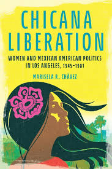

Introduction
The reading of Chicana Liberation: Women and Mexican American Politics in Los Angeles, 1945-1981 by Marisela R. Chávez brings to life the voices and struggles of Chicana activists who shaped the political landscape of Los Angeles from post-World War II era through the early 1980s.
Chávez does argues that Chicanas developed a form of “bridging activism,” that was navigated between the Chicano movement, feminist organizing, and a broader scope of social justice struggles. She places their activism within the large historical contexts of civil rights, labor movements, and the second-wave feminism.
This offered a powerful counterpoint to male-dominated narratives of political history. As Chávez stated, “Despite their attempts to assert the importance of their place in the historical record, they have been overwhelmingly overlooked in the literature that chronicles mainstream U.S. feminist history” (Chávez, 2024, p.9).